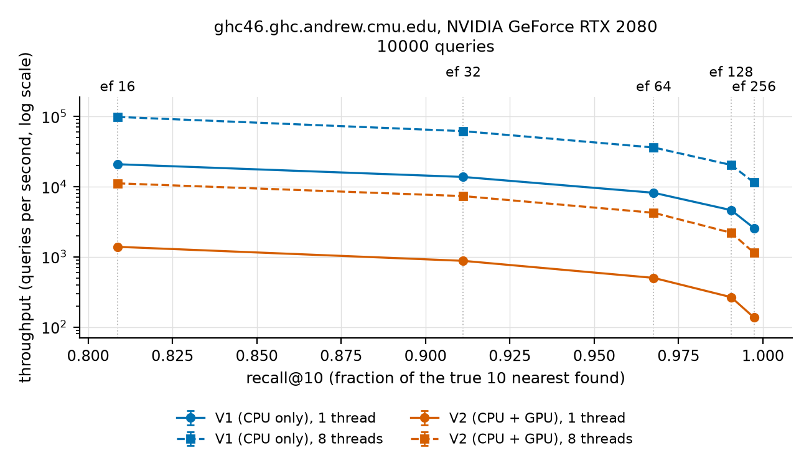
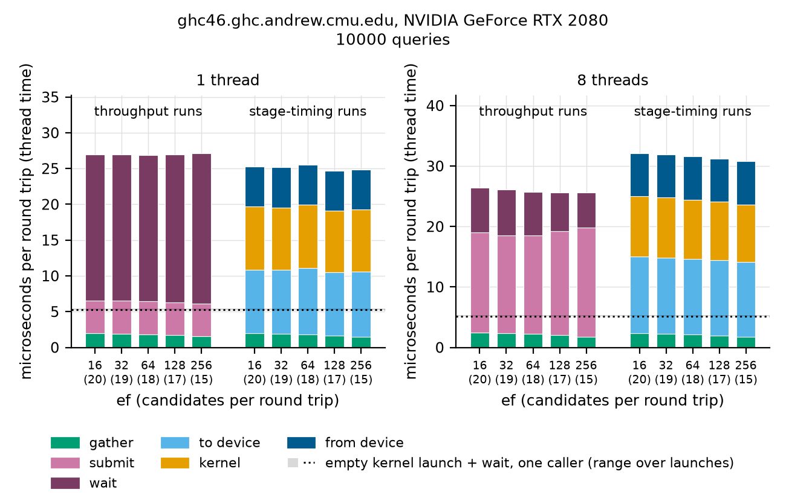
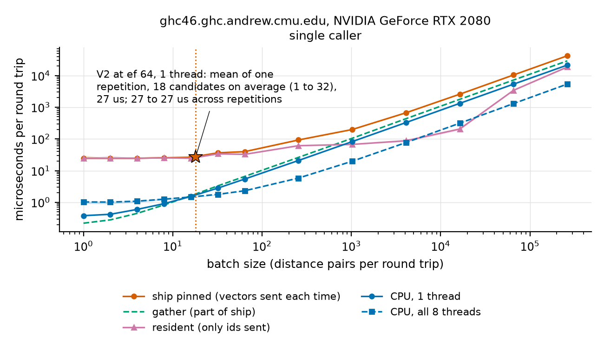

1. Overview
Work completed. We export an HNSW graph from Faiss (M = 16, efConstruction 200) for SIFT1M, one million 128-dimensional vectors, and load it with our own loaders. On it we wrote our own level-0 best-first search as a step machine: a query names the vectors whose distances it needs, then absorbs those distances. The CPU-only engine (V1) computes the distances inline with AVX2 and runs queries on OpenMP threads. The synchronized hybrid (V2) runs the same step machine, but makes every expansion one blocking round trip to a CUDA backend. The backend gathers the candidate vectors into a pinned buffer, copies them to the device, computes one distance per GPU thread and copies the distances back. Each CPU thread owns one backend with its own CUDA stream.
V2 returns exactly V1’s results: we checked ids, distances, distance-evaluation counts and hop counts for all 10,000 SIFT1M queries at efSearch 16 to 256, at 1 and 8 threads, on both of our machines. SIFT vectors are integer-valued, so CPU and GPU distances are bit-identical, and every comparison breaks ties on (distance, id). Around the two engines we built a benchmark program that records throughput, latency percentiles, recall and per-stage times; a transfer micro-benchmark that prices one distance round trip at 1 to 262,144 pairs; and scripts that run the sweeps and draw the figures. We have not started multi-query batching, which the proposal also scheduled for this week.
Headline results
- V2 is much slower than V1. On GHC (10,000 queries) V2 is 15–19× slower at one thread and 8.4–10× slower at eight.
- The round trip costs, not the arithmetic. On GHC a V2 round trip carries 15–20 candidates and costs 25–27 µs of thread time; at efSearch 64 on one thread, a query spends 97% of its time in 72 round trips.
- Shipping vectors never beat one CPU thread in our synchronous transfer benchmark, at any batch size, on either machine. Only vectors resident on the device, with ids crossing the bus, beat eight CPU threads, at one batch size on GHC.
2. Preliminary Results
Method. We search SIFT1M with k = 10 from the exported entry point on level 0; upper-layer descent is not implemented yet. At equal efSearch our search makes 0.2–3.7% more distance evaluations than Faiss, at recall equal to Faiss’s or up to 0.001 higher. We launched each configuration three times in rotated order, each launch running three timed repetitions after a discarded warm-up, and report the median over launches of each launch’s median repetition. V2’s launch medians at 8 threads on GHC differed by more than 5%, so we added a fourth launch of V1 and V2 at 8 threads there; the median includes it. Threads are bound to cores. On GHC (ghc46: i7-9700, 8 cores, RTX 2080, native Linux) we time all 10,000 queries. On our desktop (Ryzen 7 9800X3D, RTX 4070 Ti SUPER, WSL2) we time the first 1,000, because V2 runs at only 35–416 queries per second there; its recall therefore differs slightly, and we never plot it with GHC’s. Stage times are thread time, summed over threads and divided per query or per round trip.
Table 1. Throughput in queries per second of the CPU-only engine (V1) and the synchronized hybrid (V2), and how many times slower V2 is. Both return identical results, so each row compares them at exactly equal recall. Between launches, V2 at 8 threads on GHC varied by up to 9% and every other GHC configuration by at most 2%. On the desktop, V2 at 1 thread varied by up to 23% and everything else by up to about 5%. There V1 at 8 threads finishes a pass in 7–64 ms, and its QPS is 1–8% below the same engine timed on all 10,000 queries (the first 1,000 also need 1–3% more evaluations per query).
| 1 thread | 8 threads | ||||||
|---|---|---|---|---|---|---|---|
| efSearch | recall@10 | V1 QPS | V2 QPS | V1/V2 | V1 QPS | V2 QPS | V1/V2 |
| GHC: i7-9700, RTX 2080, native Linux, 10,000 queries | |||||||
| 16 | 0.809 | 20,771 | 1,386 | 15.0 | 97,929 | 11,107 | 8.8 |
| 64 | 0.968 | 8,151 | 500 | 16.3 | 35,952 | 4,229 | 8.5 |
| 256 | 0.997 | 2,558 | 136 | 18.8 | 11,389 | 1,141 | 10.0 |
| Desktop: Ryzen 7 9800X3D, RTX 4070 Ti SUPER, WSL2, first 1,000 queries | |||||||
| 16 | 0.787 | 29,829 | 368 | ≈81 | 139,151 | 416 | ≈334 |
| 64 | 0.963 | 11,277 | 133 | ≈85 | 51,181 | 150 | ≈341 |
| 256 | 0.998 | 3,497 | 35 | ≈99 | 15,748 | 41 | ≈388 |

Slowdown and scaling. On GHC (10,000 queries) V2 is 15–19× slower than V1 at one thread and 8.4–10× slower at eight (Table 1, Figure 1), as the proposal expected for a hybrid that makes one small GPU call per expansion. The gap narrows at eight threads because V2 scales 8.0–8.5× from one to eight threads and V1 only 4.4–4.7×. A round trip costs about 27 µs of thread time at one thread and 25–27 µs at eight, so eight callers, each with its own stream, do not lengthen each other’s round trips. Its composition changes, though: at eight threads most of a round trip goes to the copy and launch calls rather than to the final wait (Figure 2). We have not explained that shift, nor the slightly better than 8× scaling. V1 scales the same on the desktop (4.4–4.7×, 1,000 queries). The transfer benchmark’s bare distance loop scales 4.0–4.2× on GHC at large batches, so the limit is not specific to the search code. We suspect memory bandwidth but have not measured it.
On the desktop, V2 gains only 6–15% from eight threads. The whole process completes about 9,000–11,000 round trips per second at any thread count, and an empty kernel launch costs about 31 µs there against 5 µs on GHC. The same code scales on GHC, so the limit lies in the desktop’s GPU call path (WSL2, and a different GPU, driver and CUDA version), not in our threading. We suspect WSL2 but have not isolated it. GHC is our reference platform for anything that involves small GPU calls.

Where V2’s time goes. At efSearch 64 on GHC (one thread, 10,000 queries) a query makes 72 round trips with 18 candidates each on average (15–20 across efSearch 16–256). It spends about 59 µs outside the backend, in graph traversal and bookkeeping, and 1,940 µs in round trips: 97% of query time. Gathering the vectors takes about 2 µs per round trip; issuing the two copies and the kernel and waiting for them take the rest. In the stage-timing runs at one thread, the copy to the device, the kernel and the copy back cost 9, 9 and 6 µs per round trip, 1.1–1.8 times an empty kernel launch (5.2 µs). The transfer benchmark agrees: on GHC a round trip costs 25–26 µs whether it carries 1 or 16 pairs, while one CPU thread computes 16 random pairs in 1.5 µs. We read this as fixed per-operation cost, not computation or bandwidth. Batching candidates from many queries exists to amortize it.

What batching can and cannot buy. Figure 3 prices a round trip from 1 to 262,144 pairs on GHC. V2’s round trip costs about 1.5 µs per candidate (27 µs for 18), while shipping 1,024 pairs costs 0.19 µs per pair, so batching should amortize most of V2’s fixed cost. Shipping vectors, however, was slower than one CPU thread at every batch size on both machines. On GHC at 16,384 pairs, shipping takes 2,577 µs, of which the host-side gather takes 1,776, against 1,325 µs for one CPU thread and 314 µs for eight. On GHC the gather alone costs more than the CPU’s distance computation from 16 pairs up, so we do not expect batching or overlap to make shipping win there; the pipelined hybrid will test this inference. On the desktop the gather is cheaper than the distance computation (445 against 734 µs at 16,384 pairs), and shipping is 1.15–1.33× slower than one CPU thread from 16,384 to 262,144 pairs, so the question stays open there.
With the vectors resident on the device and only ids shipped, 16,384 pairs take 206 µs on GHC. The resident path beats one CPU thread from 1,024 pairs up, and beats eight CPU threads only at 16,384 pairs, not at 4,096 or 65,536. From 16,384 to 65,536 pairs its time grows 16.6× for 4× the pairs, to 3,409 µs; on the desktop GPU it takes 319 µs at 65,536. On the RTX 2080 the shipped path’s kernel computes 65,536 distances in 583 µs, so the slowdown is specific to the resident path, not to the arithmetic. We suspect its reads of the 512 MB vector array but do not know the cause yet.
How large must a resident set be? We ranked vectors by how often searches of the first 50,000 SIFT learn vectors visit them, then counted the distance evaluations of searches of the other 50,000, at efSearch 64. The most-visited 10% of vectors received 26% of evaluations and the top 25% received 47% (in-sample over all 100,000: 29% and 51%; uniform: 12% and 28%). The concentration is real but weak, about 2.3 times uniform at 10%.
3. Progress Against the Proposal
Table 2. Status of each goal in the proposal.
| Proposal goal | Status |
|---|---|
| Plan to achieve | |
| 1. CPU graph search, multithreaded, SIMD | Done and measured. Upper-layer descent not yet implemented. |
| 2. Basic synchronized hybrid | Done and measured; returns identical results to the CPU engine. |
| 3. Multi-query batching | Not started. Scheduled for Nov 17–23 in the proposal; now the first task. |
| 4. Memory-limited execution | Not started. The staging budget stays a parameter but cannot bind on SIFT1M: 262,144 shipped pairs need about 128 MiB of staging. The budget’s main use becomes the resident fraction (below). |
| 5. Pipelined execution | Not started. The backend already uses pinned buffers and one stream per thread. |
| 6. Performance evaluation | Throughput, recall and stage times measured for two of four strategies on both machines; latency percentiles recorded, not yet analyzed. GPU utilization and sweeps over dataset size and synthetic workloads: kept, not started. |
| Hope to achieve | |
| 1. GPU-resident vector caching | Priced by the transfer benchmark and the visit counts; the backend has a resident mode that no search uses yet. Added to the planned work as a static resident set without eviction. |
| 2. Graph traversal on the GPU | Kept; not scheduled, for lack of time. V2’s 72 round trips per query argue for it. |
| 3. Adaptive CPU–GPU scheduling | Kept. Its first step, the proposal’s threshold policy, is scheduled after the freeze if time permits. |
Schedule. We are about one week behind the proposal. The Nov 10–16 block (CPU search, first kernel, transfer measurements) started on Nov 18. We spent the remaining days making the two engines provably equivalent and the measurements reproducible, rather than building batching on unverified code. Batching and pipelining now share the two weeks after the milestone: pipelining moves from Nov 24–30 to Dec 3–5, and the proposal’s week of profiling and experiments shrinks to Dec 6–7.
Deliverables. We still expect to deliver all four execution strategies and their comparison, plus one addition that the preliminary results call for. The proposal treats GPU memory as a staging budget and resident vectors as optional, and its fallback keeps them optional. We depart from that fallback: the resident path is the only GPU path that beat all CPU threads in any measurement, while shipping never beat one. We therefore add a static resident set to the planned work. The memory budget becomes the fraction of the dataset resident on the device, chosen by visit frequency. SIFT1M fits on both GPUs, so, as the proposal allowed, we impose the budget artificially. To make room, pipelining is the first item we simplify if time runs short, as the proposal’s fallback states, and upper-layer descent and a second dataset move to after the feature freeze.
Goals for the poster session
- CPU-only (done), synchronized hybrid (done), batched hybrid and pipelined hybrid, all returning identical results on SIFT1M, compared at equal recall on both machines.
- A static GPU-resident vector set with a configurable memory budget, and the throughput of the batched and pipelined hybrids as the budget goes from 0 to 100% of the dataset, with the 8-thread CPU line on the same plot.
- The proposal’s target: whether batching and pipelining give at least 1.5× the throughput of the synchronized hybrid. We expect batching alone to exceed it, so we add three questions: (a) at what resident fraction does a hybrid cross the 8-thread CPU line; (b) is overlapping transfers with computation worth 1.5× over the batched hybrid; (c) is shipping a non-resident vector ever better than computing its distance on the CPU.
- Stage-time breakdowns and latency for every strategy on both machines, and GPU utilization of the hybrids.
- If time permits, after the freeze: upper-layer descent; a second dataset of higher dimension (GIST1M, 960-d); the threshold policy, which sends a round to the GPU only when it has enough resident candidates; traversal steps on the GPU.
Poster. We will show graphs, not a live demo: the system architecture; recall against throughput for the four strategies on both machines; throughput against resident fraction, with the CPU line and the crossover; the stage-time breakdown of each hybrid; and the round-trip cost curve of Figure 3, which explains the other plots.
4. Concerns and Unknowns
Risks to the plan
- The hybrid may never beat the CPU. On GHC the resident path beat eight CPU threads by 1.5× at one batch size, before any traversal cost, and visits are only weakly concentrated. If the crossover needs most of the dataset resident, the result is negative, and we will report it as such.
- Shipped vectors are bounded by the copy to the device on GHC. At 16,384 to 262,144 pairs the copy alone, from one caller on one stream, runs at 12.6–12.8 GB/s, while eight CPU threads consume the same vectors at the equivalent of 25–27 GB/s. Unless concurrent copies exceed that rate, which we have not measured, no batching or overlap lets a purely shipped path compute distances faster than eight threads on GHC. We infer that it cannot, and do not plan to optimize the gather. On the desktop the copy runs at 24.6–26.0 GB/s against 37–39 GB/s for 16 CPU threads, and the question stays open. Why the gather costs 1.34× the CPU’s distance time on GHC but 0.61× on the desktop is unexplained.
- The resident kernel on the RTX 2080 slows sharply between 16,384 and 65,536 pairs, for unknown reasons. This bounds the useful batch size on GHC. Yeeshu profiles it first (Nov 24–26).
- Host-side cost of batching. Keeping thousands of query states in flight and routing distances back to them is CPU work that V2 does not do. The batch-size sweep (Nov 27–29) measures how much of the round-trip saving it gives back.
- Time. Two new strategies, the resident set and the full evaluation must fit in two and a half weeks, with Thanksgiving (Nov 26–27) inside the first block. Every half-week ends with something measurable, and pipelining is the first item we simplify.
Unexplained results and how we handle them
- The CPU baseline. V1 scales 4.4–4.7× on eight cores on GHC, and a variant that runs V2’s search loop with CPU distances was 5–9% faster than V1 there at eight threads (7% slower at one; slower at both thread counts on the desktop). Our CPU baseline on GHC may therefore be slightly weak. We profile both on GHC (thread placement, memory bandwidth) during the freeze (Dec 6–7).
- Round-trip composition at eight threads. At eight threads most of a round trip moves from waiting into the copy and launch calls, and V2 scales slightly better than 8×. At one thread, stage-timing runs took slightly less time per round trip than normal runs (Figure 2). None of this changes a comparison, because thread time per round trip stays at 25–27 µs; we report only totals and do not plan to investigate further.
- Variation between launches. V2 at eight threads on GHC varied by up to 9% between launches, on a shared machine that runs the
powersaveCPU governor. The sweep logs package temperature at the start of every launch; we will compare it with the launch medians. In the final sweeps we will also sample clock frequency during each pass (at launch start it reads the idle value) and add one launch to any configuration whose launches differ by more than 5%, as we did here. - WSL2. The desktop does not scale small GPU calls across threads. We will not isolate the cause, which would require running the desktop under native Linux; GHC is our reference for per-call overhead, and the desktop serves large batches and its 16 GB of device memory.
Known limits of our setup
- Exact equality needs integer data. Our checks that every hybrid returns V1’s exact results rely on SIFT’s integer values, which make CPU and GPU distances bit-identical. GIST1M is not integer-valued, so before using it we will replace the check with a tolerance-based comparison.
- Device-memory limits under WSL2. In a manual test on the desktop, an allocation larger than the 16 GB card succeeded, so the card will not enforce a memory budget. Our budget accounting (Nov 24–26) enforces it in our own code on both machines.
- Scratch storage. The GHC data and build directories live in scratch space; we rebuild them on a GHC machine before the final sweeps (Dec 3–5).
5. Revised Schedule
Table 3. Schedule in half-week increments.
| Dates | Task | Who |
|---|---|---|
| Nov 6–23 | Done: graph export and loaders; CPU-only search (V1); CUDA distance backend; synchronized hybrid (V2); equivalence tests; transfer benchmark; first sweeps on both machines. | Christian, Yeeshu |
| Nov 24–26 | Batched hybrid (V3): many queries in flight, one round trip per round for all of them, configurable batch size; equality test against V1. | Christian |
| Profile the resident kernel on the RTX 2080 at large batches; fix or bound it. Device-memory budget accounting. | Yeeshu | |
| Nov 27–29 | Slot refill so finished queries are replaced (latency from submission to completion); batch-size sweep on both machines. | Christian |
| Static resident set: choose vectors by visit frequency; mixed resident and shipped kernel; policy for non-resident candidates (ship or compute on the CPU). | Yeeshu | |
| Nov 30–Dec 2 | Integrate the resident set into V3; equality test. | Yeeshu |
| Resident-fraction sweep (0, 1, 5, 10, 25, 50, 100%) on both machines; GPU-utilization measurement. | Christian | |
| Dec 3–5 | Pipelined hybrid (V4): query groups with their own buffers and streams, asynchronous copies, overlap of traversal and transfers; equality test. | Yeeshu |
| Measurement of V4 (overlap, utilization, latency); rebuild data and build on a GHC machine. | Christian | |
| Dec 6–7 | Feature freeze. Full sweeps of all four strategies (efSearch, batch size, resident fraction, threads) on GHC. | Yeeshu |
| The same sweeps on the desktop; profile the CPU baseline on GHC (V1’s scaling, the faster CPU-distance variant). | Christian | |
| Dec 8–10 | Final report: GPU sections (backend, resident set, pipelining) and their analysis. | Yeeshu |
| Final report: search, batching and evaluation sections; final figures; post-freeze items if time permits. | Christian | |
| Dec 10–11 | Poster: architecture and GPU panels. | Yeeshu |
| Poster: results panels. | Christian | |
| Present the poster (Dec 11). | Christian, Yeeshu |